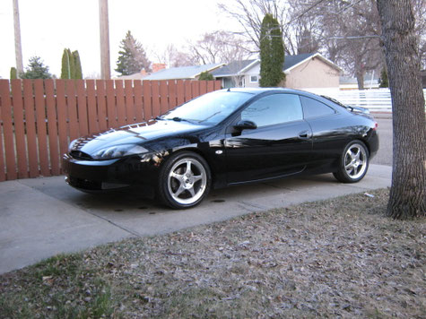
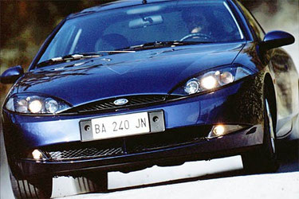
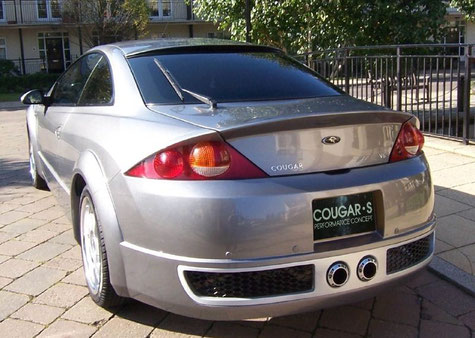

RECENSIONI
Come veniva giudicata la Ford Cougar al momento del suo debutto? In questa pagina raccogliamo alcune recensioni d'epoca della stampa specializzata e delle community di appassionati, riportate fedelmente nella loro forma originale.
Motorbox.com

La Puma rimane una piccola e grintosa coupé riservata a un pubblico più giovane e sportivo, mentre la sorella Cougar è destinata a scatenare le bramosie di cacciatori più esigenti, maturi e raffinati. Con un corpo lungo 4,70 metri e largo 1,77 metri, la Cougar entra di diritto nel segmento delle cosiddette large coupé e si candida a diventare un'alternativa al coupé nella sua veste più classica e tradizionale. La linea rivoluzionaria, infatti, è figlia del new edge design e prosegue una tendenza inaugurata con la simpaticissima Ka e giunta a maturità con il progetto Puma.
LO STILE
Il continuo intersecarsi di curve nette e superfici concave e convesse, conferisce alla Cougar uno stile deciso e inconfondibile. Il frontale è aggressivo, quasi felino. Il cofano ha una linea affusolata, rabbiosa e innovativa. La curvatura ad arco della griglia anteriore sottolinea la parentela con le altre figlie del new edge design, mentre la rastrematura centrale a V evidenzia il carattere più sportivo della Cougar. Anche la fanaleria anteriore è sufficientemente feroce per rendere immediatamente distinguibile il coguaro e intimorire chi precede. Le fiancate sfoggiano linee tese e pulite, con un profilo inferiore complesso e la curvatura del tetto sottolineata dall'andamento allungato dei finestrini laterali. Nulla sembra essere lasciato al caso e persino gli specchietti retrovisori, le maniglie delle portiere e la terza luce stop posteriore ricalcano le geometrie dell'intera vettura. Meno riuscita è invece la parte posteriore. La coda ad arco non convince pienamente e anche la fanaleria posteriore a forma di bolla d'aria non entusiasma. Certo, il design sembra arrivare direttamente dal terzo millennio e la fanaleria "a bolla" migliora la visibilità, ma si ha l'impressione che i progettisti abbiano voluto strafare. In ogni caso, la Cougar rimane piacevolmente innovativa e impartisce una bella lezione a tutti quei designer che non sanno trovare niente di meglio che copiarsi a vicenda.
SPAZIO DA FAMIGLIA
Anche le doti di abitabilità cancellano molti luoghi comuni in tema di coupé. Le portiere sono state allungate il più possibile, l'accesso ai posti posteriori è agevolato dallo scorrimento in avanti dei sedili anteriori e il bagagliaio è a prova di famiglia con prole. Il lunotto posteriore, oltre a garantire un'eccezionale luminosità agli interni, si spalanca verso l'alto e consente al bagagliaio di inghiottire bagagli per la bellezza di 410 litri. Come se non bastasse, i sedili posteriori reclinabili singolarmente possono aumentare la capacità del bagagliaio fino alla soglia dei 930 litri.
SICUREZZA
Anche le dotazioni di sicurezza non trascurano nulla: oltre alle cinture di sicurezza con pretensionatore, al doppio airbag frontale e all'Abs, la Cougar offre gli airbag laterali del tipo testa-torace, il ripartitore elettronico della forza frenante e il controllo elettronico della trazione. Per catturare i primi esemplari bisognerà aspettare gennaio 1999. Il prezzo non è ancora definito, ma le solite indiscrezioni indicano una cifra intorno ai 47 milioni di lire per la versione V6 con allestimento di serie completo di tutto o quasi.
AL VOLANTE
Il new edge design è arrivato anche dentro l'abitacolo e l'impressionante quantità di superfici curve non fa rimpiangere le ardite geometrie della carrozzeria. Tanta ricercatezza di forme non deve però trarre in inganno: il cruscotto è progettato secondo i sani principi dell'ergonomia, gli strumenti sono tutti facilmente individuabili e non mancano alcune interessanti attenzioni per il pilota e il passeggero. Per facilitare la vita di bordo, per esempio, le maniglie di apertura delle portiere sono maggiorate e i comandi dell'autoradio sono più grandi e distanziati per migliorarne l'identificazione.
MONDEO DA CORSA
Per quanto riguarda la parte nascosta sotto il vestito, la base di partenza è il collaudato pianale della Mondeo GT, ma le modifiche sono numerose e importanti. Gli interventi hanno consentito di ottenere una rigidità torsionale maggiore, carreggiate allargate, un'altezza da terra minore e una posizione di guida ribassata.
I MOTORI
E le prestazioni sono notevoli. La nuova Cougar, infatti, è disponibile con l'interessantissimo propulsore V6 da 2,5 litri e 170CV che già equipaggia le versioni al vertice della gamma Mondeo. Per la verità, gli irriducibili possono ancora ordinare il solito quattro cilindri da 2000cc e 130CV, ma è ora di svegliarsi e capire che un felino come la Cougar vuole lo scatto e l'allungo che solo le motorizzazioni a sei cilindri sanno regalare. Infatti, lasciando liberi di correre i 170 cavalli sotto il cofano, si raggiungono i 225 Km/h di velocità massima e si scatta da 0 a 100 Km/h in 8,6 secondi (7,6 secondi effettivi). Come se non bastasse, l'elasticità del motore aiuta a contenere i consumi e la coppia da 220Nm a 4250 giri consente di muoversi con agilità senza diventare isterici con l'uso del cambio.
SPORT E COMFORT
Anche il comfort offerto dalle sospensioni e il sedile guida con supporto lombare assicurano lunghe percorrenze stress-free. La complessa struttura delle sospensioni posteriori Quadralink fa sempre il proprio dovere, gli ammortizzatori non sono eccessivamente rigidi e le barre antirollio aiutano a mantenere un'eccellente precisione di guida. La rumorosità meccanica, nel caso della motorizzazione V6, è piacevolmente contenuta e il propulsore fa sentire la sua voce solo quando ci si avvicina alla zona rossa del contagiri. Anche la rumorosità aerodinamica non è fastidiosa e sono stati fatti grandi sforzi per eliminare qualsiasi fonte di disturbo dovuto ad aria, struttura o impianto di scarico. Ovviamente, quando si forza l'andatura, la rumorosità aumenta, ma il buon impianto hi-fi (SONY) aiuta a dimenticarsi dell'aria esterna e richiama l'attenzione sulle note che si diffondono all'interno dell'abitacolo. Il climatizzatore è semplice e intuitivo da utilizzare, raggiunge velocemente la temperatura impostata e aiuta tutti a stare più comodi. Completano la pagella della Cougar un impianto frenante progressivo e un cambio gommoso negli innesti, ma ben rapportato, preciso e discretamente sportivo. La Cougar viene dunque promossa con voti lusinghieri e il nuovo felino di casa Ford non mancherà di graffiare più di un appassionato.
Quattroruote.it

Non ci sono più scuse per non comprarsi una coupé o un V6. Prima si poteva dire "... costano tanto e poi, con le tasse... ", ma oggi no. Non dopo la "Cougar" (equipaggiata con il "2500" V6 24V da 125 kW). Un'altra volta la Ford stupisce il pubblico (e spiazza la concorrenza) mostrando di poter fare ciò che vuole con i prezzi. E confermando una teoria che sosteniamo da tempo: che le auto potrebbero costare meno, indipendentemente dalla cilindrata, dal tipo di motore o dalla forma della carrozzeria, pur restando sicure e ben equipaggiate. La tipologia cui appartiene la "Cougar", quella delle "berline-diventate-coupé", inoltre, sta incontrando i gusti del pubblico e se ne intuisce la ragione: offrono spazio e confort e contemporaneamente danno un'immagine molto accattivante e personale del proprietario. Pochi rimpianti: che, nella rivisitazione dell'abitacolo, non siano stati eliminati alcuni difetti della "Mondeo" (da cui la coupé deriva) e non si sia trovato un modo per offrire maggiore spazio ai più alti.
Ford Italia Club Forum - by Ford89

Auto storica e simbolica, nella versione più conosciuta degli anni '70, nata in America in casa Mercury, monta un motore derivato dal più grande monoblocco Ford: il V6 3.6L della Mustang.
Questa nuova edizione di casa Detroit rispecchia una rivoluzione e non presenta linee né europee né americane, ma in casa America gode di grande fama come qui da noi per il nostro più popolare Coupé.
Nel secondo semestre '99 inizia la commercializzazione per la prima volta in Italia tramite la rete Ford, per poi terminare nella metà del 2001 con poco più di 1.000 esemplari venduti nel territorio nazionale, la Cougar è stata abbandonata a se stessa con conseguente abbassamento a valori ridicoli del valore di mercato e rialzo dei costi di manutenzione.
La sua concezione particolare ne rende impossibile o estremamente costosa la personalizzazione/riparazione, ostacolo ovviabile solo dalle enormi risorse americane e dalle non più difficili operazioni di importazione.
Il nome è tratto dall'omonimo Leone Americano (appunto il Cougar), che rispecchia uno dei classici simboli nei quali agli Americani piace impersonificarsi: come ad esempio il Mustang, il Cobra, la Corvette, la Viper, ecc...
Ovviamente in Italia sono state commercializzate solo le prime serie, quelle con molti problemi e difetti. In America tali difetti sono stati corretti gratuitamente con dei richiami (recalls) della casa costruttrice; qui ovviamente sono a pagamento. I fari che si appannano, cigolii vari ai finestrini, pompa dell'acqua con rotore pericolosamente in plastica, cigolii e rumori vari ai freni e alla valvola dell'aria, interruttore degli stop, pompa della benzina e galleggiante, ecc... ecc... Ovviamente il modello del 2000, oltre che a presentare il logo Mercury al posto di quello Ford, ovviava a tutte queste piccole grandi noie.
Quasi tutti i modelli italiani prevedono il "Luxury Pack" (la mia prima invece era una delle pochissime con lo "Sport Kit"), e spesso avevano un fastidioso e cigolante collettore della marmitta che dovrebbe essere montato solo sui modelli con cambio automatico. Le stesse centraline sono regolate per il cambio automatico (ricordiamoci che in America il cambio manuale è a scarsissima richiesta...), ed il sistema della gestione luci è diverso.
Ad inizio 2000, in Germania ed Inghilterra è stata commercializzata la versione SVT (Sport Veichles Team) o ST200 (le uniche presenti in Italia sono state importate), che vanta le seguenti differenze: dei collettori di aspirazione lievemente più grandi (di 2mm), un filtro aria diretto, alberi a camme modificati per un maggiore rendimento, uno scarico doppio per migliorare la fuoriuscita dei gas, degli ammortizzatori doppi (olio e gas) ribassati, una barra duomi posteriore, tappezzerie e cruscotto personalizzati e dei cerchi da 17". Ah, dimenticavo: 205CV invece dei 170CV classici...
Visto il grande successo negli U.S.A. e dei risultati soddisfacenti in Germania ed Inghilterra, viene presentato nella fine del 2001 (poco dopo il ritiro ufficiale dai listini Italiani) il primo restyling di questa auto: un nuovo paraurti anteriore, lo spoiler posteriore di serie, nuovi cerchi e colore della strumentazione, oltre che a dei nuovi gruppi ottici cromati che (finalmente) eliminano totalmente i problemi dei precedenti.
E non poteva mancare la versione speciale "anniversario" denominata C2 che vanta fondamentalmente ritocchi estetici minori (se per "minori" intendiamo anche le classiche fasce colorate che attraversano tutta la carrozzeria superiore...) nelle colorazioni e nei dettagli e nuovi abbinamenti cromatici degli interni.
Testi riportati fedelmente dalle recensioni e dalle discussioni originali pubblicate all'epoca. I contenuti appartengono ai rispettivi autori.